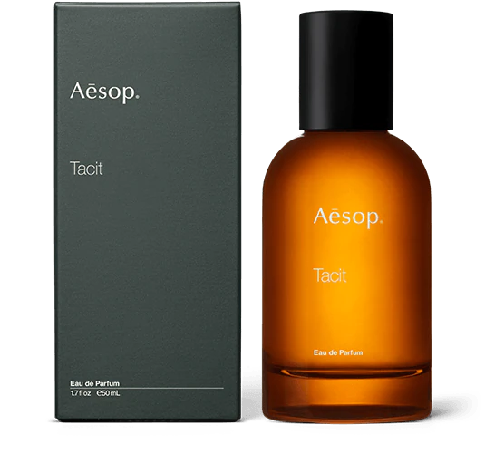

-

-
Aesop Tacit
85.00€
배송 방법 택배
배송비 무료(50,000원 이상 무료 배송)
테싯은 두 가지 요소, 전통적인 코오롱의 신선한 노트와 지중해의 문화, 지형, 그리고 섬세하고 향기로운 식물에서 영감을 받아 탄생했습니다. 유자향의 시트러스 노트의 친숙함과 현대적인 바질 향이 더해져 섬세한 스파이시한 클로브의 언더톤이 어우러진 그린 내음을 선사합니다.
· 탑노트 : 유자
· 하트노트: 바질
· 베이스노트 : 베티버, 클로브